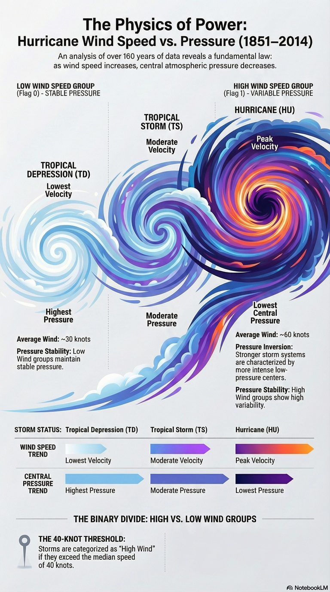

🎓 Data Analytics student based in Dublin
🌍 Background in Meteorology and Climate Science
📊 Data Analysis | Business Analytics | Environmental Data
I am a Data Analytics student with experience in analysing both business and environmental data. I have worked with Python, SQL, and Excel to clean datasets, perform exploratory analysis, and generate insights to support decision-making.
My background in meteorology allows me to bring a unique perspective to data analysis, especially when working with climate and real-world datasets.
Analysis of historical hurricane data using Python to identify patterns in wind speed and pressure.

Participation in academic research supported by FAPESP (São Paulo Research Foundation), contributing to studies related to environmental and climate data analysis.
The project focuses on understanding complex environmental systems, including the impact of climate change and biodiversity dynamics, using data-driven approaches to support scientific research and real-world decision-making.
This experience strengthened skills in data analysis, interpretation of scientific datasets, and the application of analytical methods to environmental challenges.
Completing Higher Diploma in Data Analytics (Ireland)
Open to data-related opportunities in Ireland and the EU
📧 melissalopesfagundes@gmail.com
💻 GitHub
Loading weather data...